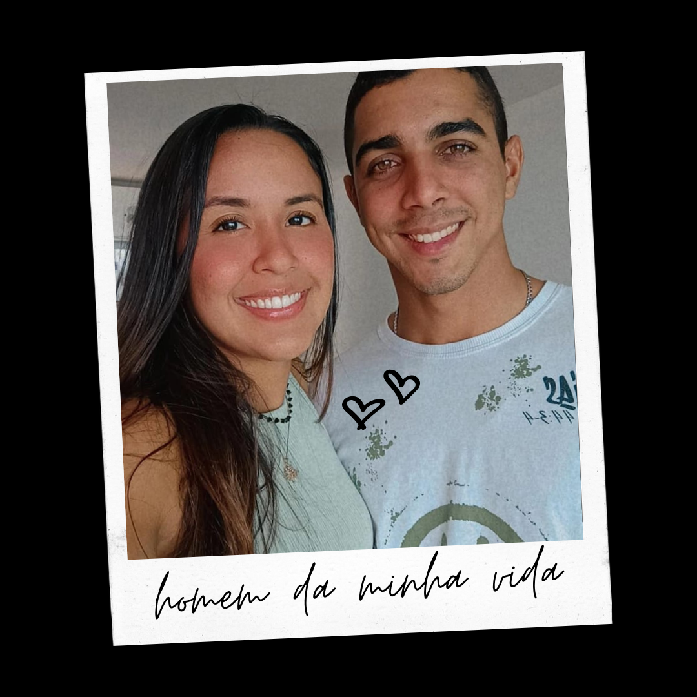

Aperte o play ▶

Meu presente de Deus, amo você!
Um site especial para treinar meus estudos e celebrar nosso amor...
Meu amor, eu não sei como descrever o que eu sinto por você. Bom, já quero começar a história falando isso 😅 enfim, agora é sério... Eu sabia que Deus ia me dar uma pessoa, mas não sabia que ela ia ser tão especial e importante como você é pra mim. Definitivamente, Deus tem o melhor para nós e Ele nos conhece. Essa área da minha vida foi uma de muitas que eu abri mão, entreguei pra Deus e confiei, e Ele com todo seu amor e bondade preparou algo maravilhoso pra mim: você! Quem diria né amor, que o projeto ia trazer uma pessoa dessas pra cada um, eu pra você e você pra mim! Eu te disse, mas volto a dizer, desde o primeiro dia que eu te vi, você chamou minha atenção, mas eu ignorei 🤭. E teve gente que veio me dizer depois que a gente ficou juntos, que naquela época já tinha sentido que ia ter algo entre a gente. Deus já tinha planos pra gente e a gente nem percebeu 🥹. Mas todas as coisas tem o momento certo pra acontecer, então não foi o tempo certo naquela suas férias, mas o certo chegou. E como chegou forte! Esse garoto foi perguntar pro meu primo se eu era solteira 😒. Fiquei cismada com você... daí depois começa a vim falar comigo, avisando que vai vir pra Natal, que vai ficar de férias. E eu fiquei só observando isso, ai ficava pensando meu Deus qual é a desse garoto ein?! Então eu resolvi começar a investigar sobre você, fui atrás de saber se você era da igreja, porque podia ser seta enviada pra me fazer cair 🤭 eu pensei isso viu amor, me perdoe! Depois que eu fiz as perguntas, que afinal não foram muito boas as respostas, porque soube logo que você não tava indo pra igreja... eu resolvi orar, entregar pra Deus. Renunciei qualquer coisa que eu estivesse pensando, entreguei de novo meu coração pra Deus, disse pra Ele guardar, também orei por você, disse pra Deus que eu achava você legal, tinha gostado do seu jeito, da sua pessoa e que queria casar com você, mas que Deus alcançasse você. Ai eu disse pra Deus que não me deixasse enganar, se não fosse uma pessoa boa pra mim. Você me ligou um dia e eu fiquei pensando esse menino tá cheio de liberdade, quero é ver qual é a dele (no dia que eu perguntei sobre as cores e você me ligou pra explicar). Foi chegando próximo de você vir e você conversando mais, combinando as coisas. Só que eu já sabia pelo seu jeito como era a vida que você levava, não fique com raiva de mim, porque eu estou sendo sincera. Fiquei com muito receio quando a gente começou a se aproximar e se ver mais, porque eu estava realmente me interessando por você, só que eu não queria correr o risco de me machucar, de me envolver com uma pessoa que pensasse diferente de mim, que pudesse me fazer tropeçar. Só que você foi ganhando espaço e me dando espaço também... você começou a me dar espaço pra eu falar de Deus pra você e aconteceu algo que não poderia ter sido melhor: seu encontro com Ele. E então, a gente começou a conversar sobre relacionamentos, você ficava me perguntando sobre as coisas que no fundo, na verdade era o que você estava idealizando e eu percebia de cara tudo o que você tava pensando, interpretava você 😂 Eu ficava imaginando eu com você e também observava tudo que você fazia, seu jeito de me tratar, seu jeito de agir, seu jeito de reagir, sua forma de pensar. Eu me sentia muito amada, protegida, antes mesmo de a gente se envolver como casal. Então teve aquele dia do beijo que eu fiquei chateada com você por ter feito aquilo e em seguida você tomou a decisão! E aí foi onde começou nossa união... Amo cada dia que a gente conviveu, passou juntos, por mais que não tenha sido tanto tempo assim, mas foram dias maravilhosos. E meu amor que saudades de você, de nós! Não vejo a hora de a gente finalmente ficar juntos, nos casarmos, construir nossa vida, nossa família e continuar nossa história... ❤️
Cada momento com você é único e inesquecível.